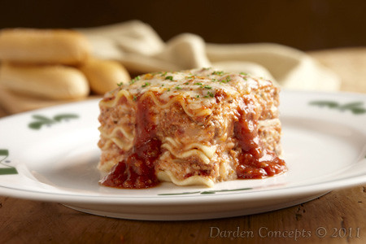

Home
Lasagna

Credit: Oliver Garden on flickr.
Description
An easy lasagna recipe that saves me lots of time. This dish satisfies everyone in the family. Try it tonight!
Prep time: 10 mins, Cook time: 1 hr 10 mins, Total time: 1 hr 20 mins.
Servings: 12
Ingredients
- Ground beef (1 pound)
- Spaghetti sauce (32 ounces)
- Cottage cheese (32 ounces), mozzarella (3 cups), and Parmesan (1/2 cup)
- Eggs (2)
- Seasonings: dried parsley (2 tsp), salt, and black pepper
- Lasagna noodles (9)
- Water (1/2 cup)
Steps
- Gather all ingredients and preheat the oven to 350 degrees F.
- Cook and stir ground beef in the hot (medium-high heat) skillet until browned and crumbly, 8 to 10 minutes. Drain and discard grease. Stir in spaghetti sauce and simmer for 5 minutes.
- Combine cottage cheese, 2 cups of mozzarella chese, eggs, 1/2 of the grated Parmesan cheese, dried parsley, salt, and pepper in a large bowl.
- Spread 3/4 cup of sauce in a baking dish. Cover with 3 uncooked lasagna noodles, 1 and 3/4 cups of cheese mixture, and 1/4 cup sauce; repeat layers once more. Top with remaining 3 noodles, sauce, mozzarella, and Parmesan cheese. Pour 1/2 cup water along the edges of the dish. Cover tightly with aluminum foil.
- Bake in the preheated oven for 45 minutes. Uncover and bake for an additional 10 minutes. Let stand 10 minutes before serving.
Original author: Joanie Heger